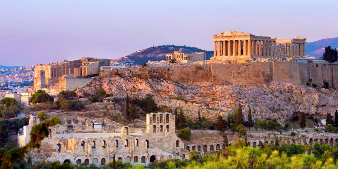

Greece is an amazing destination that offers a unique combination of history, natural beauty, and cultural depth. From the ancient ruins of the Acropolis in Athens to the famous sunsets in Santorini, the country presents endless opportunities for both exploration and relaxation. The islands, especially Santorini and Mykonos, are particularly well-known for their picturesque landscapes, with crystal-clear waters and the iconic white-washed buildings topped with blue domes. Whether you’re navigating the historic streets of Athens or enjoying the serene beaches of Crete, each part of Greece offers something distinct and memorable.
Greece’s appeal extends beyond its rich historical significance—it is also renowned for its culinary traditions. Greek cuisine is celebrated for its emphasis on fresh, locally-sourced ingredients that reflect the principles of the Mediterranean diet. Classic dishes like moussaka, souvlaki, and baklava are essential parts of the Greek dining experience, while simpler options like a traditional Greek salad, made with tomatoes, cucumbers, and feta, highlight the freshness of the region’s produce. Dining in Greece is more than just a meal; it embodies the country’s culture of hospitality and togetherness, where sharing food is a key part of social life. Greece’s combination of history, culture, and gastronomy makes it an exceptional travel destination.